20. تأمين خدمة الويب للوصول إلى قاعدة البيانات [dbproduitscategories]
20.1. إعداد بيئة العمل
سنقوم بتأمين خدمة الويب باستخدام المشاريع التالية:
 |
- ستوجد مشاريع [spring-security-*] في المجلد [<exemples>\spring-database-generic\spring-security]؛
- سيتم إعداد الأمان لمشروعي SGBD و MySQL باستخدام طبقة [DAO / JDBC] ثم طبقة [DAO / JPA / Hibernate]؛
- اضغط على Alt-F5 ثم أعد إنشاء جميع مشاريع Maven؛
نحتاج إلى إنشاء مستخدمين في قاعدة البيانات [dbproduitscategories]. للقيام بذلك، استخدم إعداد التشغيل [spring-security-create-users-hibernate-eclipselink]:
 |  |
يؤدي تنفيذ هذا التكوين إلى ملء الجداول [USERS, ROLES, USERS_ROLES] من الجدول [dbproduitscategories]:
 |
 |
المعرفات التي تم إنشاؤها [login/passwd] هي التالية: [admin/admin]، [user/user]، [guest/guest]. في قاعدة البيانات، تكون كلمات المرور مشفرة.
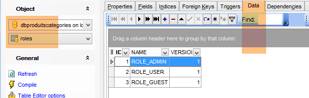 |

بعد ذلك، قم بتشغيل ملف التكوين المسمى [spring-security-server-jpa-generic-hibernate-eclipselink] الذي يقوم بتشغيل خدمة الويب الآمنة (يجب تشغيل MySQL):
 |  |
ثم قم بتنفيذ التكوين المسمى [spring-security-client-generic-JUnitTestDao] الذي يختبر خدمة الويب الآمنة:
 |  |
يجب أن ينجح الاختبار.
20.2. مشروع Eclipse [spring-security-server-jdbc-generic]
يتم تنفيذ خدمة الويب الآمنة من خلال المشروع [spring-security-server-jdbc-generic]:
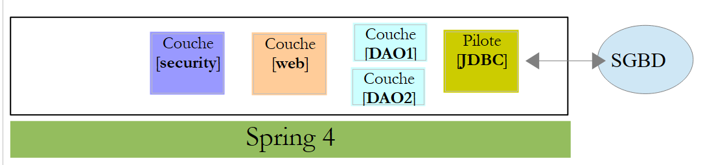 |
أعلاه:
- الطبقة [DAO1] هي الطبقة [DAO] التي تدير الجداول [PRODUITS] و [CATEGORIES] في قاعدة البيانات [dbproduitscategories]. وقد تمت كتابتها بالفعل؛
- الطبقة [DAO2] هي الطبقة [DAO] التي تدير الجداول [USERS]، [ROLES] و [USERS_ROLES] التابعة لقاعدة البيانات [dbproduitscategories]. ولا يزال يتعين كتابتها؛
 |
20.2.1. تكوين Maven
المشروع [spring-security-server-jdbc-generic] هو مشروع Maven تم تكوينه بواسطة الملف [pom.xml] التالي:
<project xmlns="http://maven.apache.org/POM/4.0.0" xmlns:xsi="http://www.w3.org/2001/XMLSchema-instance"
xsi:schemaLocation="http://maven.apache.org/POM/4.0.0 http://maven.apache.org/xsd/maven-4.0.0.xsd">
<modelVersion>4.0.0</modelVersion>
<groupId>dvp.spring.database</groupId>
<artifactId>spring-security-server-jdbc-generic</artifactId>
<version>0.0.1-SNAPSHOT</version>
<name>spring-security-server-jdbc-generic</name>
<description>démo spring security</description>
<properties>
<project.build.sourceEncoding>UTF-8</project.build.sourceEncoding>
<java.version>1.7</java.version>
</properties>
<parent>
<groupId>org.springframework.boot</groupId>
<artifactId>spring-boot-starter-parent</artifactId>
<version>1.2.3.RELEASE</version>
</parent>
<dependencies>
<!-- أمان Spring -->
<dependency>
<groupId>org.springframework.boot</groupId>
<artifactId>spring-boot-starter-security</artifactId>
</dependency>
<!-- خادم الويب / jSON -->
<dependency>
<groupId>dvp.spring.database</groupId>
<artifactId>spring-webjson-server-jdbc-generic</artifactId>
<version>0.0.1-SNAPSHOT</version>
</dependency>
</dependencies>
<!-- المكونات الإضافية -->
<build>
<plugins>
<plugin>
<groupId>org.apache.maven.plugins</groupId>
<artifactId>maven-surefire-plugin</artifactId>
<version>2.18.1</version>
</plugin>
</plugins>
</build>
</project>
- الأسطر 29-33: يتم استعادة ما هو موجود مع أرشيف خدمة الويب / json / jdbc الذي تمت دراسته؛
- الأسطر 24-27: التبعية التي تجلب فئات Spring Security؛
في النهاية، يعرض المشروع التبعيات التالية على المشاريع الأخرى التي تم تحميلها في Eclipse:
 |
20.2.2. الطبقة [DAO2]
 |
أعلاه:
- الطبقة [DAO1] هي الطبقة [DAO] التي تدير الجداول [PRODUITS] و [CATEGORIES] التابعة لقاعدة البيانات [dbproduitscategories]. وقد تمت كتابتها بالفعل؛
- الطبقة [DAO2] هي الطبقة [DAO] التي تدير الجداول [USERS]، [ROLES] و [USERS_ROLES] التابعة لقاعدة البيانات [dbproduitscategories]. وهذه هي الطبقة التي سنقوم بكتابتها الآن؛
 |
يفرض Spring Security إنشاء فئة تُنفذ الواجهة التالية: [UsersDetail]:
 |
يتم تنفيذ هذه الواجهة هنا بواسطة الفئة [AppUserDetails]:
package spring.security.dao;
import generic.jdbc.config.ConfigJdbc;
import java.sql.ResultSet;
import java.sql.SQLException;
import java.util.ArrayList;
import java.util.Collection;
import java.util.Collections;
import java.util.List;
import org.springframework.jdbc.core.RowMapper;
import org.springframework.jdbc.core.namedparam.NamedParameterJdbcTemplate;
import org.springframework.security.core.GrantedAuthority;
import org.springframework.security.core.authority.SimpleGrantedAuthority;
import org.springframework.security.core.userdetails.UserDetails;
import spring.jdbc.entities.Role;
import spring.jdbc.entities.User;
import spring.jdbc.infrastructure.DaoException;
public class AppUserDetails implements UserDetails {
private static final long serialVersionUID = 1L;
// JdbcTemplate
private NamedParameterJdbcTemplate namedParameterJdbcTemplate;
// الخصائص
private User user;
private String simpleClassName = getClass().getSimpleName();
// المنشئون
public AppUserDetails() {
}
public AppUserDetails(User user, NamedParameterJdbcTemplate namedParameterJdbcTemplate) {
this.user = user;
this.namedParameterJdbcTemplate = namedParameterJdbcTemplate;
}
// -------------------------واجهة
@Override
public Collection<? extends GrantedAuthority> getAuthorities() {
Collection<GrantedAuthority> authorities = new ArrayList<>();
for (Role role : getRoles(user.getId())) {
authorities.add(new SimpleGrantedAuthority(role.getName()));
}
return authorities;
}
...
// طرق خاصة----------------
private List<Role> getRoles(Long id) {
try {
// البحث عن المستخدم عبر معرّفه
return namedParameterJdbcTemplate.query(ConfigJdbc.SELECT_ROLES_BYUSERID, Collections.singletonMap("id", id), new ShortRoleMapper());
} catch (Exception e) {
//e.printStackTrace();
throw new DaoException(167, e, simpleClassName);
}
}
}
// --------------------- أدوات التعيين
class ShortRoleMapper implements RowMapper<Role> {
@Override
public Role mapRow(ResultSet rs, int rowNum) throws SQLException {
return new Role(rs.getLong("r_ID"), rs.getLong("r_VERSIONING"), rs.getString("r_NAME"));
}
}
- السطر 22: الفئة [AppUserDetails] تُنفذ الواجهة [UserDetails]؛
- السطران 29-30: تُغلف الفئة مستخدمًا (السطر 19) والمستودع الذي يتيح الحصول على تفاصيل هذا المستخدم (السطر 20)؛
- السطر 27: سيتم الوصول إلى قاعدة البيانات عبر JDBC باستخدام الكائن [NamedParameterJdbcTemplate namedParameterJdbcTemplate] المُعرَّف في المشروع [spring-jdbc-generic-04]. تجدر الإشارة إلى أن هذا الكائن لا يتم حقنه بواسطة Spring كما كان يحدث غالبًا. بل يتم توفيره لمُنشئ الكائنات في الأسطر 36-39. لماذا؟ لأن الفئة [AppUserDetails] ليست مكونًا من مكونات Spring (لا توجد علامة @Component) وبالتالي لا يمكن إجراء عمليات حقن فيها؛
- الأسطر 36-39: المنشئ الذي يقوم بإنشاء مثيل للفئة باستخدام مستخدم ومستودعه؛
- الأسطر 42-49: تنفيذ الطريقة [getAuthorities] للواجهة [UserDetails]. يجب أن تقوم بإنشاء مجموعة من العناصر من النوع [GrantedAuthority] أو مشتق منه. هنا، نستخدم النوع المشتق [SimpleGrantedAuthority] (السطر 46) الذي يغلف اسم أحد أدوار المستخدم المذكور في السطر 29؛
- الأسطر 45-47: يتم تصفح قائمة أدوار المستخدم الواردة في السطر 29 لإنشاء قائمة بالعناصر من النوع [SimpleGrantedAuthority]؛
- السطر 45: للحصول على أدوار المستخدم، يتم استخدام الطريقة الخاصة [getRoles] الموجودة في السطر 53؛
- السطر 56: تنفيذ الأمر SQL [ConfigJdbc.SELECT_ROLES_BYUSERID] (المُعرَّف في [Configjdbc]) التالي:
public static final String SELECT_ROLES_BYUSERID = "SELECT DISTINCT r.ID as r_ID, r.VERSIONING as r_VERSIONING, r.NAME as r_NAME FROM ROLES r, USERS u, USERS_ROLES ur WHERE u.ID=:id AND ur.USER_ID=u.ID AND ur.ROLE_ID=r.ID";
يقوم هذا الاستعلام SQL بإجراء ربط بين الجداول الثلاثة [USERS, ROLES, USERS_ROLES] للحصول على أدوار مستخدم محدد بواسطة مفتاحه الأساسي. ويتم تعيين معلماته باستخدام المفتاح الأساسي [:id] للمستخدم الذي نبحث عن أدواره.
- السطر 56: يتم تحويل كل سطر من نتائج [SELECT] إلى كيان [Role] بواسطة الفئة [ShortRowMapper] في الأسطر 66-72؛
لنعد إلى كود الفئة [AppUserDetails]:
package spring.security.dao;
...
public class AppUserDetails implements UserDetails {
private static final long serialVersionUID = 1L;
// JdbcTemplate
private NamedParameterJdbcTemplate namedParameterJdbcTemplate;
// الخصائص
private User user;
private String simpleClassName = getClass().getSimpleName();
// المنشئات
public AppUserDetails() {
}
public AppUserDetails(User user, NamedParameterJdbcTemplate namedParameterJdbcTemplate) {
this.user = user;
this.namedParameterJdbcTemplate = namedParameterJdbcTemplate;
}
// -------------------------الواجهة
@Override
public Collection<? extends GrantedAuthority> getAuthorities() {
Collection<GrantedAuthority> authorities = new ArrayList<>();
for (Role role : getRoles(user.getId())) {
authorities.add(new SimpleGrantedAuthority(role.getName()));
}
return authorities;
}
@Override
public String getPassword() {
return user.getPassword();
}
@Override
public String getUsername() {
return user.getLogin();
}
@Override
public boolean isAccountNonExpired() {
return true;
}
@Override
public boolean isAccountNonLocked() {
return true;
}
@Override
public boolean isCredentialsNonExpired() {
return true;
}
@Override
public boolean isEnabled() {
return true;
}
// أدوات الاسترجاع والتعيين
...
}
- الأسطر 35-37: تُنفذ الطريقة [getPassword] الخاصة بالواجهة [UserDetails]. يتم إرجاع كلمة مرور المستخدم الواردة في السطر 12؛
- الأسطر 39-42: تُنفذ الطريقة [getUserName] الخاصة بالواجهة [UserDetails]. يتم إرجاع اسم تسجيل الدخول للمستخدم الموجود في السطر 12؛
- الأسطر 44-47: لا تنتهي صلاحية حساب المستخدم أبدًا؛
- الأسطر 49-52: لا يتم حظر حساب المستخدم أبدًا؛
- الأسطر 54-57: لا تنتهي صلاحية بيانات اعتماد المستخدم أبدًا؛
- الأسطر 59-62: يظل حساب المستخدم نشطًا دائمًا؛
يفرض Spring Security أيضًا وجود فئة تُنفِّذ الواجهة [AppUserDetailsService]:
 |
يتم تنفيذ هذه الواجهة بواسطة الفئة التالية [AppUserDetailsService]:
package spring.security.dao;
import generic.jdbc.config.ConfigJdbc;
import java.sql.ResultSet;
import java.sql.SQLException;
import java.util.Collections;
import java.util.List;
import org.springframework.beans.factory.annotation.Autowired;
import org.springframework.jdbc.core.RowMapper;
import org.springframework.jdbc.core.namedparam.NamedParameterJdbcTemplate;
import org.springframework.security.core.userdetails.UserDetails;
import org.springframework.security.core.userdetails.UserDetailsService;
import org.springframework.security.core.userdetails.UsernameNotFoundException;
import org.springframework.stereotype.Service;
import spring.jdbc.entities.User;
import spring.jdbc.infrastructure.DaoException;
@Service
public class AppUserDetailsService implements UserDetailsService {
// عمليات الحقن
@Autowired
private NamedParameterJdbcTemplate namedParameterJdbcTemplate;
// محلي
private String simpleClassName = getClass().getSimpleName();
@Override
public UserDetails loadUserByUsername(String login) throws UsernameNotFoundException {
List<User> users;
try {
// البحث عن المستخدم عبر اسم تسجيل الدخول
users = namedParameterJdbcTemplate.query(ConfigJdbc.SELECT_USER_BYLOGIN,
Collections.singletonMap("login", login), new ShortUserMapper());
} catch (Exception e) {
throw new DaoException(145, e, simpleClassName);
}
// هل تم العثور عليه؟
if (users.size() == 0) {
throw new UsernameNotFoundException(String.format("login [%s] inexistant", login));
}
// عرض تفاصيل المستخدم
return new AppUserDetails(users.get(0), namedParameterJdbcTemplate);
}
}
// --------------------- أدوات التعيين
class ShortUserMapper implements RowMapper<User> {
@Override
public User mapRow(ResultSet rs, int rowNum) throws SQLException {
return new User(rs.getLong("u_ID"), rs.getLong("u_VERSIONING"), rs.getString("u_NAME"), rs.getString("u_LOGIN"),
rs.getString("u_PASSWORD"));
}
}
- السطر 21: ستكون الفئة مكونًا من مكونات Spring؛
- السطران 25-26: سيتم الوصول إلى قاعدة البيانات عبر JDBC باستخدام الكائن [NamedParameterJdbcTemplate namedParameterJdbcTemplate] المُعرَّف في حبوب المشروع [spring-jdbc-generic-04]؛
- السطور 31-49: تنفيذ الطريقة [loadUserByUsername] الخاصة بالواجهة [UserDetailsService] (السطر 22). المعلمة هي اسم تسجيل دخول المستخدم؛
- الأسطر 36-37: يتم البحث عن المستخدم باستخدام اسم تسجيل الدخول الخاص به. الترتيب SQL [ConfigJdbc.SELECT_USER_BYLOGIN] هو كما يلي:
public static final String SELECT_USER_BYLOGIN = "SELECT u.ID as u_ID, u.VERSIONING as u_VERSIONING, u.NAME as u_NAME,u.LOGIN as u_LOGIN,u.PASSWORD as u_PASSWORD FROM USERS u WHERE u.LOGIN= :login";
يتم تحويل كل سطر يتم إرجاعه بواسطة SELECT إلى كيان [User] بواسطة الفئة [ShortUserMapper] في الأسطر 52-58.
- الأسطر 42-44: إذا لم يتم العثور عليه، يتم إلقاء استثناء؛
- السطر 46: يتم إنشاء كائن [AppUserDetails] وعرضه. وهو بالفعل من النوع [UserDetails] (السطر 32). يتم تمرير معلومتين إلى منشئه:
- المستخدم الذي تم العثور عليه؛
- الكائن [namedParameterJdbcTemplate] الذي سيسمح للفئة [AppUserDetails] بإجراء استعلام على قاعدة البيانات؛
20.2.3. الطبقة [web]
 |
يعتمد المشروع [spring-security-server-jdbc-generic] على المشروع [spring-webjson-server-jdbc-generic]:
|
هذا المشروع هو الذي ينفذ الطبقة [web]. ولا يلزم تعديلها.
20.2.4. إعدادات الأمان للمشروع
 |
يتم تكوين المشروع بواسطة الفئة التالية: [AppConfig]:
1  |
لقد تعرفنا سابقًا على فئة تكوين Spring Security (انظر الفقرة 19.2.4):
package hello;
import org.springframework.context.annotation.Configuration;
import org.springframework.security.config.annotation.authentication.builders.AuthenticationManagerBuilder;
import org.springframework.security.config.annotation.web.builders.HttpSecurity;
import org.springframework.security.config.annotation.web.configuration.WebSecurityConfigurerAdapter;
import org.springframework.security.config.annotation.web.servlet.configuration.EnableWebMvcSecurity;
@Configuration
@EnableWebMvcSecurity
public class WebSecurityConfig extends WebSecurityConfigurerAdapter {
@Override
protected void configure(HttpSecurity http) throws Exception {
http.authorizeRequests().antMatchers("/", "/home").permitAll().anyRequest().authenticated();
http.formLogin().loginPage("/login").permitAll().and().logout().permitAll();
}
@Override
protected void configure(AuthenticationManagerBuilder auth) throws Exception {
auth.inMemoryAuthentication().withUser("user").password("password").roles("USER");
}
}
وسنتبع نفس النهج:
- السطر 11: تعريف فئة تمتد من الفئة [WebSecurityConfigurerAdapter]؛
- السطر 13: تعريف طريقة [configure(HttpSecurity http)] التي تحدد حقوق الوصول إلى مختلف URL في خدمة الويب؛
- السطر 19: تعريف طريقة [configure(AuthenticationManagerBuilder auth)] التي تحدد المستخدمين وأدوارهم؛
ستكون الفئة [AppConfig] كما يلي:
package spring.security.config;
import org.springframework.beans.factory.annotation.Autowired;
import org.springframework.context.annotation.ComponentScan;
import org.springframework.context.annotation.Configuration;
import org.springframework.context.annotation.Import;
import org.springframework.http.HttpMethod;
import org.springframework.security.config.annotation.authentication.builders.AuthenticationManagerBuilder;
import org.springframework.security.config.annotation.web.builders.HttpSecurity;
import org.springframework.security.config.annotation.web.configuration.EnableWebSecurity;
import org.springframework.security.config.annotation.web.configuration.WebSecurityConfigurerAdapter;
import org.springframework.security.crypto.bcrypt.BCryptPasswordEncoder;
import spring.security.dao.AppUserDetailsService;
import spring.webjson.server.config.WebConfig;
@Configuration
@EnableWebSecurity
@ComponentScan(basePackages = { "spring.security.dao", "spring.security.service" })
@Import({ spring.webjson.server.config.AppConfig.class, WebConfig.class })
public class AppConfig extends WebSecurityConfigurerAdapter {
@Autowired
private AppUserDetailsService appUserDetailsService;
// التأمين
private boolean activateSecurity = true;
@Override
protected void configure(AuthenticationManagerBuilder registry) throws Exception {
// تتم المصادقة بواسطة bean [appUserDetailsService]
// يتم تشفير كلمة المرور بواسطة خوارزمية التجزئة BCrypt
registry.userDetailsService(appUserDetailsService).passwordEncoder(new BCryptPasswordEncoder());
}
@Override
protected void configure(HttpSecurity http) throws Exception {
// CSRF
http.csrf().disable();
// تطبيق آمن؟
if (activateSecurity) {
// يتم إرسال كلمة المرور عبر رأس الرسالة Authorization: Basic xxxx
http.httpBasic();
// يجب السماح باستخدام الطريقة HTTP OPTIONS للجميع
http.authorizeRequests() //
.antMatchers(HttpMethod.OPTIONS, "/", "/**").permitAll();
// لا يمكن استخدام التطبيق إلا من خلال الدور ADMIN
http.authorizeRequests() //
.antMatchers("/", "/**") // جميع URL
.hasRole("ADMIN");
// هل تتطلب جلسة عمل أم لا؟
//http.sessionManagement().sessionCreationPolicy(SessionCreationPolicy.STATELESS);
}
}
}
- السطر 17: هذه الفئة هي فئة تكوين لـ Spring؛
- السطر 18: تنشيط عناصر Spring Security؛
- السطر 26: يتم استرداد مكونات Spring من الطبقة [DAO2] وتلك الموجودة في الحزمة [spring.security.service] التي سنتحدث عنها لاحقًا؛
- السطر 23: يتم استيراد الفاصوليا من مشروع [spring-webjson-server-jdbc-generic] الذي ينفذ الطبقة [web]. ومن بين هذه الفاصوليا، توجد أيضًا تلك الخاصة بالطبقة [DAO1]؛
- السطران 22-23: يتم إدخال الفئة [AppUserDetails] التي تتيح الوصول لمستخدمي التطبيق؛
- السطر 26: قيمة منطقية تحدد ما إذا كان التطبيق الويب آمنًا (true) أم لا (false)؛
- السطور 28-33: تحدد الطريقة [configure(HttpSecurity http)] المستخدمين وأدوارهم. وتتلقى كمعلمة نوعًا [AuthenticationManagerBuilder]. ويتم إثراء هذه المعلمة بمعلومتين (السطر 32):
- مرجع إلى الخدمة [appUserDetailsService] في السطر 23 التي تتيح الوصول للمستخدمين المسجلين. وتجدر الإشارة هنا إلى أن حقيقة تسجيلهم في قاعدة بيانات لا تظهر. لذا، قد يكونون موجودين في ذاكرة التخزين المؤقت، أو يتم توفيرهم بواسطة خدمة ويب، ...
- نوع التشفير المستخدم لكلمة المرور. وقد استخدمنا الخوارزمية BCrypt؛
- الأسطر 35-53: تحدد الطريقة [configure(HttpSecurity http)] حقوق الوصول إلى URL الخاصة بخدمة الويب؛
- السطر 38: رأينا في مشروع المقدمة أن Spring Security يدير افتراضيًا رمزًا CSRF (تزوير الطلبات عبر المواقع) يجب على المستخدم الذي يرغب في المصادقة إرساله إلى الخادم. هنا، تم تعطيل هذه الآلية. وهذا بالإضافة إلى القيمة المنطقية (isSecured=false) يسمح باستخدام تطبيق الويب بدون أمان؛
- السطر 42: يتم تفعيل وضع المصادقة عبر الرأس HTTP. سيتعين على العميل إرسال الرأس HTTP التالي:
حيث «code» هو ترميز السلسلة login:password باستخدام خوارزمية Base64. على سبيل المثال، الترميز Base64 للسلسلة admin:admin هو YWRtaW46YWRtaW4=. وبالتالي، فإن المستخدم الذي يستخدم اسم المستخدم [admin] وكلمة المرور [admin] سيرسل الرأس التالي HTTP لتوثيق هويته:
- الأسطر 47-49: تشير إلى أن جميع URL الخاصة بخدمة الويب متاحة للمستخدمين الذين لديهم الدور [ROLE_ADMIN]. وهذا يعني أن المستخدم الذي لا يمتلك هذا الدور لا يمكنه الوصول إلى خدمة الويب؛
- السطر 51: في وضع [session]، لا يحتاج المستخدم الذي قام بتوثيق هويته مرة واحدة إلى تكرار ذلك في مرات الدخول التالية. هذه هي القيمة الافتراضية لـ Spring Security. السطر 51 يعطل هذا الوضع. إذا كان نشطًا، فسيتعين على المستخدم المصادقة عند كل دخول. بدون جلسة عمل، تكون استجابة خدمة الويب الآمنة أقل منها مع وجود جلسة عمل، ولذلك تم تعليق السطر 51؛
20.2.5. اختبارات الخدمة الويب الآمنة
سنقوم باختبار الخدمة الويب باستخدام متصفح Chrome [Advanced Rest Client]. سنحتاج إلى تحديد رأس المصادقة HTTP:
حيث [code] هو رمز Base64 لسلسلة [login:password]. لتوليد هذا الرمز، يمكن استخدام البرنامج التالي من مشروع [spring-security-create-users]:
 |
package spring.security.helpers;
import org.springframework.security.crypto.codec.Base64;
public class Base64Encoder {
public static void main(String[] args) {
// يتوقع حصوله على معلمتين: اسم المستخدم وكلمة المرور
if (args.length != 2) {
System.out.println("Syntaxe : login password");
System.exit(0);
}
// يتم استرداد المعلمتين
String chaîne = String.format("%s:%s", args[0], args[1]);
// يتم ترميز السلسلة
byte[] data = Base64.encode(chaîne.getBytes());
// يتم عرض الترميز Base64
System.out.println(new String(data));
}
}
إذا قمنا بتشغيل هذا البرنامج مع المعلمتين [admin admin]:
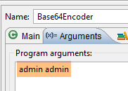 |
نحصل على النتيجة التالية:
نحن الآن جاهزون لإجراء الاختبارات:
- يجب تشغيل SGBD و MySQL؛
- نقوم بملء الجداول [PRODUITS] و [CATEGORIES] باستخدام إعدادات التشغيل المسماة [spring-jdbc-generic-04-fillDataBase]:
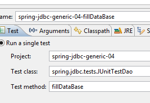 |
- إذا لم يكن ذلك قد تم بالفعل، نقوم بملء الجداول [USERS, ROLES, USERS_ROLES] باستخدام إعدادات التشغيل المسماة [spring-security-create-users-hibernate-eclipselink]:
 |
- نقوم بتشغيل خدمة الويب الآمنة باستخدام تكوين التشغيل المسمى [spring-security-server-jdbc-generic]:
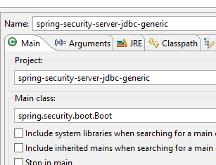 |
ثم باستخدام عميل Chrome [Advanced Rest Client]، نطلب النسخة المطولة لجميع الفئات:
 |
- في [1]، نطلب URL للفئات الطويلة؛
- في [2]، باستخدام طريقة GET؛
- في [3]، نقدم رأس HTTP للمصادقة. الرمز [YWRtaW46YWRtaW4=] هو ترميز Base64 للسلسلة [admin:admin]؛
- في [4]، نرسل الأمر HTTP؛
رد الخادم هو كما يلي:
 |
- في [1]، رأس المصادقة HTTP؛
- في [2]، يرد الخادم برد jSON؛
ونحصل بالفعل على قائمة الفئات:
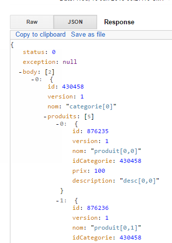 |
لنحاول الآن إرسال طلب HTTP برأس مصادقة غير صحيح. تكون الاستجابة عندئذٍ كما يلي:
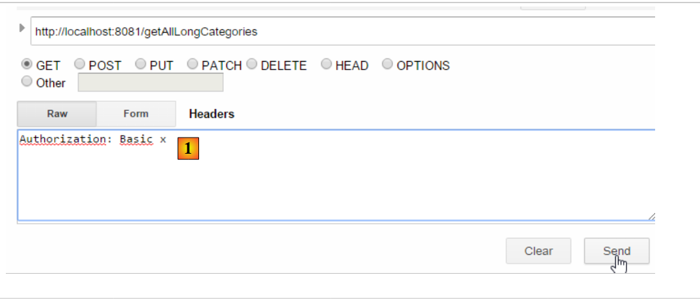 |
- في [1]: رأس المصادقة HTTP؛
نحصل على الرد التالي:
 |
- إلى [2]: استجابة خدمة الويب؛
الآن، لنجرب المستخدم user / user. إنه موجود ولكنه لا يملك حق الوصول إلى خدمة الويب. إذا قمنا بتشغيل برنامج الترميز Base64 مع الحجتين [user user]:
 |
نحصل على النتيجة التالية:
 |
- في [1]: رأس المصادقة HTTP غير صحيح؛
 |
- في [2]: استجابة خدمة الويب. وهي تختلف عن الاستجابة السابقة التي كانت [401 Unauthorized]. هذه المرة، قام المستخدم بالمصادقة بشكل صحيح ولكنه لا يمتلك الصلاحيات الكافية للوصول إلى URL؛
أصبحت خدمة الويب الآمنة جاهزة للعمل الآن.
20.2.6. URL للمصادقة
 |
سنقوم بإنشاء URL الذي سيسمح لنا بمعرفة ما إذا كان المستخدم مخولًا بالوصول إلى خدمة الويب أم لا. ولهذا الغرض، نقوم بإنشاء وحدة التحكم الجديدة MVC [AuthenticateController] التالية:
package spring.security.service;
import org.springframework.web.bind.annotation.RequestMapping;
import org.springframework.web.bind.annotation.RequestMethod;
import org.springframework.web.bind.annotation.RestController;
import spring.webjson.server.service.Response;
@RestController
public class AuthenticateController {
@RequestMapping(value = "/authenticate", method = RequestMethod.GET)
public Response<Void> authenticate() {
return new Response<Void>(0, null, null);
}
}
- السطر 9: الفئة [AuthenticateController] هي وحدة تحكم Spring. وبهذه الصفة، فإنها تعرض URL. تشير التعليقات التوضيحية [@RestController] إلى أن الطرق التي تعالج هذه URL ترسل استجاباتها بنفسها إلى العميل؛
- السطر 11: يعرض URL [/authenticate]؛
- الأسطر 12-14: تكتفي الطريقة بإرجاع كائن [Response] فارغًا ولكن مع قيمة [status] تساوي 0، مما يدل على عدم وجود أي خطأ؛
ما الغرض من هذا URL؟ عندما نرغب ببساطة في مصادقة مستخدم، سنطلبه. وقد رأينا أنه إذا لم تقبل طبقة الأمان هذا المستخدم، فإنها ترجع استثناءً. وإليك مثالاً على ذلك؛
مع المستخدم [admin:admin]:
 |  |
نحصل على استجابة فارغة ولكن دون استثناء.
مع المستخدم [user:user]:
 |  |
حدثت استثناء.
20.2.7. الخلاصة
تمت إضافة الفئات اللازمة إلى Spring Security دون إجراء أي تعديلات على المشروع الأصلي للويب/json. ويعود هذا السيناريو المواتي للغاية إلى أن الجداول الثلاثة التي تمت إضافتها إلى قاعدة البيانات مستقلة عن الجداول الموجودة. بل كان من الممكن وضعها في قاعدة بيانات منفصلة. وفي حالات أخرى، قد تكون للجداول المضافة علاقات مع الجداول الموجودة. وعندئذٍ يجب مراجعة كود الطبقة [DAO] الموجودة.
20.3. عميل مبرمج لخدمة الويب / jSON الآمنة
لقد قمنا بالفعل بكتابة عميل لخدمة الويب / jSON غير الآمنة:
 |
سنقوم الآن بإنشاء عميل مبرمج لخدمة الويب الآمنة:
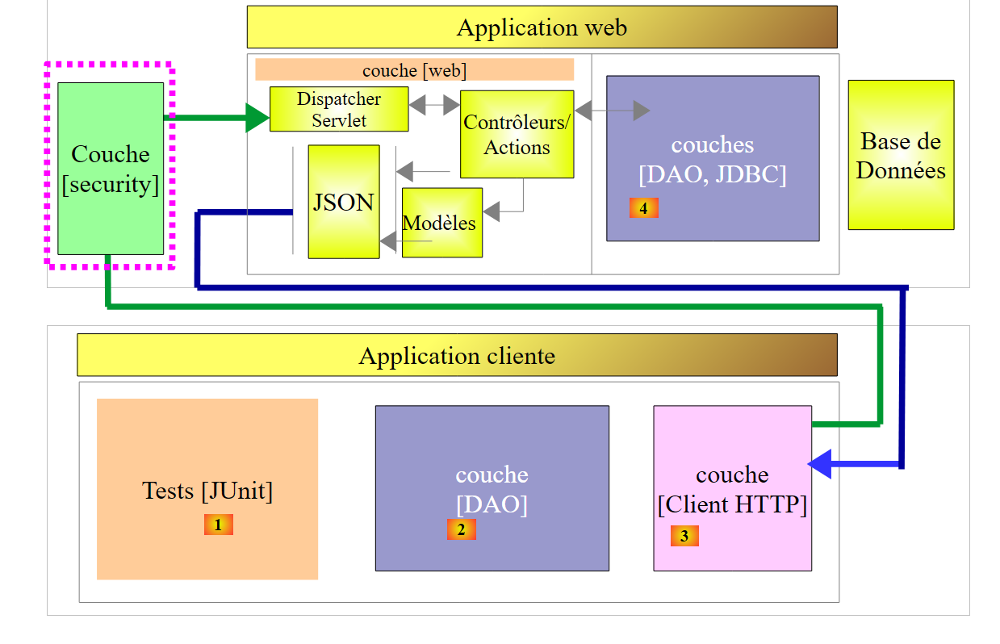 |
 |
20.3.1. الطبقة [Client HTTP]
 |
 |  |
تضمن الفئة [Client] الاتصال HTTP مع خادم الويب الآمن / jSON. وكما رأينا للتو، في عملية الاتصال هذه HTTP، يتعين على العميل الآن إرسال رأس مصادقة، على سبيل المثال:
تصبح الواجهة [IClient] كما يلي:
package spring.webjson.client.dao;
import org.springframework.http.HttpMethod;
import spring.webjson.client.entities.Credentials;
public interface IClient {
public <T1, T2> T1 getResponse(Credentials credentials,String url, HttpMethod method, int errStatus, T2 body);
}
- السطر 8: أصبح المعلمة الأولى للطريقة [getResponse] الآن كائنًا [Credentials] الذي يغلف معرّفات المستخدم:
package spring.security.client.entities;
public class Credentials {
// الخصائص
private String login;
private String password;
// منشئ
public Credentials() {
}
public Credentials(String login, String password) {
this.login = login;
this.password = password;
}
// المنشورات والمُعيّنات
...
}
تتطور الفئة [Client] التي تنفذ الواجهة [IClient] على النحو التالي:
package spring.security.client.dao;
...
@Component
public class Client implements IClient {
// عمليات الإدخال
@Autowired
protected RestTemplate restTemplate;
@Autowired
protected String urlServiceWebJson;
// محلي
private String simpleClassName = getClass().getSimpleName();
private String getBase64(Credentials credentials) {
// يتم ترميز اسم المستخدم وكلمة المرور بنظام الترميز Base64 - يتطلب Java 8
String chaîne = String.format("%s:%s", credentials.getLogin(), credentials.getPassword());
return String.format("Basic %s", new String(Base64.getEncoder().encode(chaîne.getBytes())));
}
// طلب عام
@Override
public <T1, T2> T1 getResponse(Credentials credentials, String url, HttpMethod method, int errStatus, T2 body) {
// استجابة الخادم
ResponseEntity<Response<T1>> response;
try {
// يتم إعداد الطلب
RequestEntity<?> request = null;
if (method == HttpMethod.GET) {
HeadersBuilder<?> headersBuilder = RequestEntity.get(new URI(String.format("%s%s", urlServiceWebJson, url))) .accept(MediaType.APPLICATION_JSON);
if (credentials != null) {
headersBuilder = headersBuilder.header("Authorization", getBase64(credentials));
}
request = headersBuilder.build();
}
if (method == HttpMethod.POST) {
BodyBuilder bodyBuilder = RequestEntity.post(new URI(String.format("%s%s", urlServiceWebJson, url))).header("Content-Type", "application/json").accept(MediaType.APPLICATION_JSON);
if (credentials != null) {
bodyBuilder = bodyBuilder.header("Authorization", getBase64(credentials));
}
request = bodyBuilder.body(body);
}
// تنفيذ الطلب
response = restTemplate.exchange(request, new ParameterizedTypeReference<Response<T1>>() {
});
} catch (Exception e) {
// تغليف الاستثناء
throw new DaoException(errStatus, e, simpleClassName);
}
...
}
...
}
- الأسطر 33-35، 40-42: إذا لم يكن المستخدم [credentials] قيمة فارغة، يتم إضافة رأس المصادقة. يتم تشفير اسم المستخدم وكلمة المرور Base64 بواسطة الطريقة [getBase64] في الأسطر 17-21. يجب الانتباه إلى أن هذه الطريقة تستخدم فئة [Base64] التي تنتمي إلى JDK 1.8. يمكن لعميلنا HTTP العمل مع خدمة ويب غير آمنة. يكفي تزويده بـ [credentials] يساوي null؛
- بخلاف الأسطر السابقة، يبقى الكود دون تغيير؛
20.3.2. الطبقة [DAO]
 |
20.3.2.1. الواجهة [IDao]
 |
تتلقى جميع طرق واجهة [IDao] التابعة للمشروع [spring-webjson-client-generic] معلمة إضافية هي [Credentials credentials]:
package spring.security.client.dao;
import java.util.List;
import spring.security.client.entities.AbstractCoreEntity;
import spring.security.client.entities.Credentials;
public interface IDao<T extends AbstractCoreEntity> extends IAuthenticate {
// قائمة بجميع الكيانات T
public List<T> getAllShortEntities(Credentials credentials);
public List<T> getAllLongEntities(Credentials credentials);
// الكيانات المحددة - النسخة المختصرة
public List<T> getShortEntitiesById(Credentials credentials, Iterable<Long> ids);
public List<T> getShortEntitiesById(Credentials credentials, Long... ids);
public List<T> getShortEntitiesByName(Credentials credentials, Iterable<String> names);
public List<T> getShortEntitiesByName(Credentials credentials, String... names);
// الكيانات المحددة - النسخة الطويلة
public List<T> getLongEntitiesById(Credentials credentials, Iterable<Long> ids);
public List<T> getLongEntitiesById(Credentials credentials, Long... ids);
public List<T> getLongEntitiesByName(Credentials credentials, Iterable<String> names);
public List<T> getLongEntitiesByName(Credentials credentials, String... names);
// تحديث عدة كيانات
public List<T> saveEntities(Credentials credentials, Iterable<T> entities);
public List<T> saveEntities(Credentials credentials, @SuppressWarnings("unchecked") T... entities);
// حذف جميع الكيانات
public void deleteAllEntities(Credentials credentials);
// حذف عدة كيانات
public void deleteEntitiesById(Credentials credentials, Iterable<Long> ids);
public void deleteEntitiesById(Credentials credentials, Long... ids);
public void deleteEntitiesByName(Credentials credentials, Iterable<String> names);
public void deleteEntitiesByName(Credentials credentials, String... names);
public void deleteEntitiesByEntity(Credentials credentials, Iterable<T> entities);
public void deleteEntitiesByEntity(Credentials credentials, @SuppressWarnings("unchecked") T... entities);
}
- السطر 8: واجهة [IDao] توسع الواجهة التالية [IAuthenticate]:
package spring.security.client.dao;
import spring.security.client.entities.Credentials;
public interface IAuthenticate {
// المصادقة
public void authenticate(Credentials credentials);
}
تحتوي الواجهة [IAuthenticate] على طريقة واحدة فقط هي [authenticate]. لا تُرجع هذه الطريقة أي قيمة (void) إذا تم قبول المستخدم [Credentials credentials] من قبل خدمة الويب الآمنة، وإلا تُرجع استثناءً.
20.3.2.2. الفئة [AbstractDao]
 |
تجدر الإشارة إلى أن الفئة [AbstractDao] هي الفئة الأم للفئات [DaoCategorie] التي تدير URL الخاصة بالفئات، و[DaoProduit] التي تدير URL الخاصة بالمنتجات. تتلقى جميع الطرق في الفئة [AbstractDao] التابعة للمشروع [spring-webjson-client-generic] معلمة إضافية [Credentials credentials] تقوم بتمريرها إلى الفئة الفرعية. وفيما يلي مثال على ذلك:
@Override
public List<T1> getShortEntitiesById(Credentials credentials, Iterable<Long> ids) {
// صحة الوسيطة
List<T1> entities = checkNullOrEmptyArgument(true, ids);
if (entities != null) {
return entities;
}
// النتيجة
return getShortEntitiesById(credentials, Lists.newArrayList(ids));
}
- تستقبل الطريقة [getShortEntitiesById] المعلمة [Credentials credentials] (السطر 2) التي تقوم بتمريرها (السطر 9) إلى الطريقة [getShortEntitiesById] في الفئة الفرعية؛
تحتوي الفئة [AbstractDao] على الهيكل التالي:
package spring.security.client.dao;
import java.util.ArrayList;
import java.util.List;
import org.springframework.beans.factory.annotation.Autowired;
import spring.security.client.entities.AbstractCoreEntity;
import spring.security.client.entities.Credentials;
import spring.security.client.infrastructure.MyIllegalArgumentException;
import com.google.common.collect.Lists;
public abstract class AbstractDao<T1 extends AbstractCoreEntity> implements IDao<T1> {
@Autowired
private IAuthenticate authenticate;
...
}
- السطر 14: تنفذ الفئة الواجهة [IDao] التي وصفناها؛
- السطران 16-17: يتم إدخال مثيل للواجهة [IAuthenticate]. ويتم تنفيذ هذه الواجهة بواسطة الفئة التالية [Authenticate]:
package spring.security.client.dao;
import org.springframework.beans.factory.annotation.Autowired;
import org.springframework.http.HttpMethod;
import org.springframework.stereotype.Component;
import spring.security.client.entities.Credentials;
@Component
public class Authenticate implements IAuthenticate{
@Autowired
protected IClient client;
// التحقق [credentials,mdp]
public void authenticate(Credentials credentials) {
client.<Void, Void> getResponse(credentials, "/authenticate", HttpMethod.GET, 111, (Void) null);
}
}
- السطر 9: الفئة [Authenticate] هي مكون Spring؛
- السطر 10: التي تنفذ واجهة [IAuthenticate]؛
- السطران 11-12: حقن العميل HTTP الذي يسمح بالتواصل مع خدمة الويب الآمنة؛
- الأسطر 15-17: تنفيذ الطريقة [authenticate] الخاصة بالواجهة؛
- السطر 16: يتم إرسال أمر HTTP GET إلى URL [/authenticate]. وقد تم شرح استخدام هذا URL في الفقرة 20.2.6. ويتمثل مبدأ عمله في أن الاستدعاء ينتهي باستثناء إذا كان المستخدم [credentials] غير معروف أو لا يمتلك الصلاحيات الكافية؛
تقوم الفئة [AbstractDao] بتنفيذ الطريقة [authenticate] الخاصة بالواجهة [IDao] بالطريقة التالية:
@Autowired
private IAuthenticate authenticate;
@Override
public void authenticate(Credentials credentials) {
authenticate.authenticate(credentials);
}
- السطر 7: يتم تفويض المهمة إلى الطريقة [authenticate] التابعة للفئة [Authenticate]. وبالتالي، ستحدث استثناء إذا لم يتم قبول المستخدم [Credentials credentials] من قبل خدمة الويب الآمنة؛
20.3.2.3. الفئات [DaoCategorie, DaoProduit]
 |
الفئات [DaoCategorie, DaoProduit] هي فئات المشروع [spring-webjson-server-generic] مع المعلمة الإضافية [Credentials credentials]. وفيما يلي مثال على ذلك:
@Component
public class DaoCategorie extends AbstractDao<Categorie> {
// عمليات الإدخال
@Autowired
protected ApplicationContext context;
@Autowired
protected IClient client;
@Override
public List<Categorie> getAllShortEntities(Credentials credentials) {
try {
// مرشحات jSON
ObjectMapper mapper = context.getBean("jsonMapperShortCategorie", ObjectMapper.class);
// عرض جميع الفئات
Object map = client.<List<Categorie>, Void> getResponse(credentials, "/getAllShortCategories", HttpMethod.GET,
202, null);
// قائمة الفئات List<Categorie>
return mapper.readValue(mapper.writeValueAsString(map), new TypeReference<List<Categorie>>() {
});
} catch (DaoException e1) {
throw e1;
} catch (Exception e2) {
throw new DaoException(221, e2, simpleClassName);
}
}
....
20.3.3. تكوين Spring
 |
تقوم الفئة [AppConfig] بتكوين بيئة Spring للمشروع. وهي مطابقة لما كانت عليه في المشروع [spring-webjson-client-generic] باستثناء تفصيل واحد:
@Configuration
@ComponentScan({ "spring.security.client.dao" })
public class AppConfig {
- السطر 2: يجب إدخال حزمة الطبقة الجديدة [DAO]؛
20.3.4. اختبارات الطبقة [DAO]
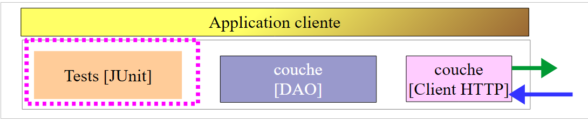 |
 |
20.3.4.1. اختبار [JUnitTestCredentials]
يستخدم الاختبار [JUnitTestCredentials] الطريقة [IDao.authenticate] للتحقق من صحة أو عدم صحة بعض المستخدمين:
package client.tests.junit;
import org.junit.Assert;
import org.junit.BeforeClass;
import org.junit.Test;
import org.junit.runner.RunWith;
import org.springframework.beans.factory.annotation.Autowired;
import org.springframework.boot.test.SpringApplicationConfiguration;
import org.springframework.test.context.junit4.SpringJUnit4ClassRunner;
import spring.security.client.config.AppConfig;
import spring.security.client.dao.IAuthenticate;
import spring.security.client.entities.Credentials;
import spring.security.client.infrastructure.DaoException;
@SpringApplicationConfiguration(classes = AppConfig.class)
@RunWith(SpringJUnit4ClassRunner.class)
public class JUnitTestCredentials {
// طبقة [DAO]
@Autowired
private IAuthenticate authenticate;
// المستخدمون
static private Credentials admin;
static private Credentials user;
static private Credentials unknown;
@BeforeClass
public static void init() {
admin = new Credentials("admin", "admin");
user = new Credentials("user", "user");
unknown = new Credentials("x", "y");
}
@Test()
public void checkUserUser() {
DaoException se = null;
try {
authenticate.authenticate(user);
} catch (DaoException e) {
se = e;
System.out.println("checkUserUser: " + e);
}
Assert.assertNotNull(se);
Assert.assertEquals("403 Forbidden", se.getExceptions().get(0).getErrorMessage());
}
@Test()
public void checkUserUnknown() {
DaoException se = null;
try {
authenticate.authenticate(unknown);
} catch (DaoException e) {
se = e;
System.out.println("checkUserUnknown : " + e);
}
Assert.assertNotNull(se);
Assert.assertEquals("401 Unauthorized", se.getExceptions().get(0).getErrorMessage());
}
@Test()
public void checkUserAdmin() {
DaoException se = null;
try {
authenticate.authenticate(admin);
} catch (DaoException e) {
se = e;
System.out.println("checkUserAdmin : " + e);
}
Assert.assertNull(se);
}
}
- أثناء تهيئة فئة الاختبار، في الأسطر 29-34، يتم إنشاء ثلاثة مستخدمين:
- المستخدم [admin] لديه حق الوصول إلى URL الخاص بخدمة الويب. ويتم اختباره في الأسطر 63-72؛
- المستخدم [user] موجود ولكنه غير مخول باستخدام URL الخاص بخدمة الويب. يتم اختباره في الأسطر 37-47؛
- المستخدم [unknown] غير موجود. يتم اختباره في الأسطر 50-60؛
يتم تشغيل خدمة الويب الآمنة باستخدام تكوين التشغيل المسمى [spring-security-server-jdbc-generic] [1]:
 |
ثم يتم تشغيل الاختبار JUnit [JUnitTestCredentials] باستخدام تكوين التشغيل [spring-security-client-generic-JUnitTestCredentials] [2]. وفيما يلي نتائج وحدة التحكم التي تم الحصول عليها:
وقد نجح الاختبار:
 |
20.3.4.2. اختبار [JUnitTestDao]
اختبار [JUnitTestDao] مطابق لما كان عليه في المشروع غير الآمن [spring-webjson-client-generic]، باستثناءإلا أن طرق الطبقة [DAO] التي تم اختبارها الآن تتخذ جميعها المستخدم [admin / admin] كمعلمة أولى:
@SpringApplicationConfiguration(classes = AppConfig.class)
@RunWith(SpringJUnit4ClassRunner.class)
public class JUnitTestDao {
// سياق Spring
@Autowired
private ApplicationContext context;
// الطبقة [DAO]
@Autowired
private IDao<Produit> daoProduit;
@Autowired
private IDao<Categorie> daoCategorie;
....
// المستخدمون
static private Credentials admin;
@BeforeClass
public static void init() {
admin = new Credentials("admin", "admin");
}
@Before
public void clean() {
// يتم مسح قاعدة البيانات قبل كل اختبار
log("Vidage de la base de données", 1);
// يتم إفراغ الجدول [CATEGORIES] وبالتالي الجدول [PRODUITS]
daoCategorie.deleteAllEntities(admin);
// يتم إفراغ القواميس
for (Long id : mapCategories.keySet()) {
mapCategories.remove(id);
}
for (Long id : mapProduits.keySet()) {
mapProduits.remove(id);
}
}
private List<Categorie> fill(int nbCategories, int nbProduits) {
// يتم ملء الجداول
...
// إضافة الفئة - وبشكل متسلسل، سيتم أيضًا
// - يتم عرض النتيجة في نفس الوقت
return daoCategorie.saveEntities(admin, categories);
}
private Object[] showDataBase() throws BeansException, JsonProcessingException {
// قائمة الفئات
log("Liste des catégories", 2);
List<Categorie> categories = daoCategorie.getAllShortEntities(admin);
affiche(categories, context.getBean("jsonMapperShortCategorie", ObjectMapper.class));
// قائمة المنتجات
log("Liste des produits", 2);
List<Produit> produits = daoProduit.getAllShortEntities(admin);
affiche(produits, context.getBean("jsonMapperShortProduit", ObjectMapper.class));
// النتيجة
return new Object[] { categories, produits };
}
...
تُجرى جميع العمليات باستخدام المستخدم [admin / admin] الذي يمتلك وحده حق الوصول إلى خدمة الويب الآمنة.
سيتم تشغيل الاختبار باستخدام تكوين التشغيل المسمى [spring-security-client-generic-JUnitTestDao]:
 |
نجح الاختبار، لكن يمكن ملاحظة أنه أبطأ مقارنةً بخدمة الويب غير الآمنة. يؤدي تأمين التطبيق إلى زيادة ملحوظة في أوقات الاستجابة. يمكن ملاحظة عامل مهم في أداء خدمة الويب الآمنة: في الفئة [AppConfig] التي تقوم بتكوينها، كتبنا:
@Override
protected void configure(HttpSecurity http) throws Exception {
// CSRF
http.csrf().disable();
// هل التطبيق آمن؟
if (activateSecurity) {
// يتم إرسال كلمة المرور عبر رأس الرسالة Authorization: Basic xxxx
http.httpBasic();
// يجب السماح باستخدام الطريقة HTTP OPTIONS للجميع
http.authorizeRequests() //
.antMatchers(HttpMethod.OPTIONS, "/", "/**").permitAll();
// لا يمكن استخدام التطبيق إلا من خلال الدور ADMIN
http.authorizeRequests() //
.antMatchers("/", "/**") // جميع URL
.hasRole("ADMIN");
// لا توجد جلسة عمل
http.sessionManagement().sessionCreationPolicy(SessionCreationPolicy.STATELESS);
}
}
السطر 17 له تأثير. فهو يفرض أو لا يفرض على المستخدم المصادقة عند كل وصول. إذا تم تعليقه، فإن مدة اختبار JUnit تكون أقل بشكل ملحوظ، وذلك لأن المستخدم [admin] لا يقوم بالمصادقة إلا في الاختبار الأول وليس في الاختبارات التالية (حتى لو أرسل العميل رأس المصادقة HTTP، فإن الخادم لا يعيد التحقق من كلمة مرور المستخدم).
20.4. مشروع Eclipse [spring-security-server-jpa-generic]
سيتم الآن تنفيذ خدمة الويب الآمنة من خلال المشروع [spring-security-server-jpa-generic] الذي يعتمد على المشروع [spring-jpa-generic] الذي يدير الوصول إلى قاعدة البيانات باستخدام Spring Data JPA:
 |
أعلاه:
- الطبقة [DAO1] هي الطبقة [DAO] التي تدير الجداول [PRODUITS] و [CATEGORIES] في قاعدة البيانات [dbproduitscategories]. وقد تمت كتابتها بالفعل؛
- الطبقة [DAO2] هي الطبقة [DAO] التي تدير الجداول [USERS]، و[ROLES] و[USERS_ROLES] التابعة لقاعدة البيانات [dbproduitscategories]. ولا يزال يتعين كتابتها؛
يتم الحصول على المشروع [spring-security-server-jpa-generic] أولاً عن طريق نسخ المشروع الذي تمت دراسته سابقًا [spring-security-server-jdbc-generic]. في الواقع، لا تتغير الطبقتان [web] و [security] لأن:
- الطبقة [DAO1 / Repositories / JPA] (التي تمت كتابتها بالفعل) لها نفس واجهة الطبقة [DAO1 / JDBC]؛
- الطبقة [DAO2 / Repositories / JPA] (التي سيتم كتابتها) سيكون لها نفس واجهة الطبقة [DAO2 / JDBC]؛
المشروع [spring-security-server-jpa-generic] هو كما يلي:
 |
- الحزمة [spring.security.repositories] تنفذ الطبقة [repositories]؛
- الحزمة [spring.security.dao] تُنفِّذ الطبقة [dao2]؛
20.4.1. مشروع Maven
المشروع هو مشروع Maven تم تكوينه بواسطة الملف [pom.xml] التالي:
<project xmlns="http://maven.apache.org/POM/4.0.0" xmlns:xsi="http://www.w3.org/2001/XMLSchema-instance"
xsi:schemaLocation="http://maven.apache.org/POM/4.0.0 http://maven.apache.org/xsd/maven-4.0.0.xsd">
<modelVersion>4.0.0</modelVersion>
<groupId>dvp.spring.database</groupId>
<artifactId>spring-security-server-jpa-generic</artifactId>
<version>0.0.1-SNAPSHOT</version>
<name>spring-security-server-jpa-generic</name>
<description>démo spring security</description>
<properties>
<project.build.sourceEncoding>UTF-8</project.build.sourceEncoding>
<java.version>1.7</java.version>
</properties>
<parent>
<groupId>org.springframework.boot</groupId>
<artifactId>spring-boot-starter-parent</artifactId>
<version>1.2.3.RELEASE</version>
</parent>
<dependencies>
<!-- أمان Spring -->
<dependency>
<groupId>org.springframework.boot</groupId>
<artifactId>spring-boot-starter-security</artifactId>
</dependency>
<!-- خادم الويب / jSON -->
<dependency>
<groupId>dvp.spring.database</groupId>
<artifactId>spring-webjson-server-jpa-generic</artifactId>
<version>0.0.1-SNAPSHOT</version>
</dependency>
</dependencies>
<!-- المكونات الإضافية -->
<build>
<plugins>
<plugin>
<groupId>org.apache.maven.plugins</groupId>
<artifactId>maven-surefire-plugin</artifactId>
<version>2.18.1</version>
</plugin>
</plugins>
</build>
</project>
- الأسطر 24-27: التبعية لطبقة [security] الخاصة بالمشروع؛
- الأسطر 29-33: التبعية لطبقة [web] الخاصة بالمشروع. يقوم مشروع [spring-webjson-server-jpa-generic] بتنفيذ طبقة [web] بالكامل. ولا تحتاج هذه الطبقة إلى كتابة أو تعديل؛
في النهاية، تكون التبعيات كما يلي:
 |
20.4.2. تكوين Spring
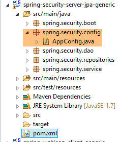 |
ملف التكوين [AppConfig] الخاص بالمشروع السابق [spring-security-server-jdbc-generic] مناسب. ما عليك سوى إضافة تكوين إضافي إليه:
@Configuration
@EnableWebSecurity
@EnableJpaRepositories(basePackages = { "spring.security.repositories" })
@ComponentScan(basePackages = { "spring.security.dao", "spring.security.service" })
@Import({ spring.webjson.server.config.AppConfig.class })
public class AppConfig extends WebSecurityConfigurerAdapter {
- السطر 3: نعلن الحزمة التي تنفذ الطبقة [repositories]؛
- السطر 4: الحزم التي تحتوي على مكونات Spring تحمل نفس الاسم في المشروع الجديد؛
- السطر 5: في المشروع السابق، كانت الفئة [spring.webjson.server.config.AppConfig] موجودة في التبعية [spring-webjson-server-jdbc-generic]. أما هنا فستكون موجودة في التبعية [spring-webjson-server-jpa-generic]؛
20.4.3. الطبقة JPA
 |
تم العثور على الكيانات JPA التي تديرها الطبقة [JPA] في المشروع [mysql-config-jpa-hibernate] [2] الذي يعد تابعًا للمشروع [1]:
 |
الفئة [User] هي صورة الجدول [USERS]:

- ID: المفتاح الأساسي؛
- VERSION: عمود إصدار السطر؛
- IDENTITY: هوية وصفية للمستخدم؛
- LOGIN: اسم تسجيل دخول المستخدم؛
- PASSWORD: كلمة المرور الخاصة به؛
package generic.jpa.entities.dbproduitscategories;
import generic.jdbc.config.ConfigJdbc;
import java.util.List;
import javax.persistence.CascadeType;
import javax.persistence.Column;
import javax.persistence.Entity;
import javax.persistence.FetchType;
import javax.persistence.GeneratedValue;
import javax.persistence.GenerationType;
import javax.persistence.Id;
import javax.persistence.OneToMany;
import javax.persistence.Table;
import javax.persistence.Transient;
import javax.persistence.Version;
import com.fasterxml.jackson.annotation.JsonIgnore;
@Entity
@Table(name = ConfigJdbc.TAB_USERS)
public class User implements AbstractCoreEntity {
// الخصائص
@Id
@GeneratedValue(strategy = GenerationType.IDENTITY)
@Column(name = ConfigJdbc.TAB_JPA_ID)
protected Long id;
@Version
@Column(name = ConfigJdbc.TAB_JPA_VERSIONING)
protected Long version;
@Transient
protected EntityType entityType=EntityType.POJO;
// الخصائص
@Column(name = ConfigJdbc.TAB_USERS_NAME, length = 30, nullable = false)
private String name;
@Column(name = ConfigJdbc.TAB_USERS_LOGIN, length = 30, unique = true, nullable = false)
private String login;
@Column(name = ConfigJdbc.TAB_USERS_PASSWORD, length = 60, nullable = false)
private String password;
// العناصر المرتبطة بـ UserRole
@OneToMany(fetch = FetchType.LAZY, mappedBy = "user", cascade = { CascadeType.ALL })
@JsonIgnore
private List<UserRole> userRoles;
// المنشئون
public User() {
}
public User(Long id, Long version, String identity, String login, String password) {
this.id = id;
this.version = version;
this.name = identity;
this.login = login;
this.password = password;
}
// ------------------------------------------------------------
// إعادة تعريف [equals] و [hashcode]
...
// دالات الاسترجاع والتعيين
...
}
- السطر 23: الفئة تنفذ الواجهة [AbstractCoreEntity] التي سبق استخدامها للكيانات الأخرى؛
- السطران 34-35: نوع الكيان. لا يتم حفظ هذه الخاصية في قاعدة البيانات [@Transient]؛
- الأسطر 38-43: الخصائص الأساسية الثلاثة للمستخدم (name، login، password)؛
- الأسطر 46-48: قائمة أدوار المستخدم. قد يكون له عدة أدوار. وبالمثل، سنرى أنه يمكن ربط عدة مستخدمين بدور واحد. وبالتالي، وفقًا لمعنى المصطلح في JPA، توجد علاقة [ManyToMany] بين الكيانين [User] و [Role]:
- يمكن لمستخدم واحد أن يرتبط بعدة أدوار؛
- يمكن لدور ما أن يشير إلى عدة مستخدمين؛
يتم تنفيذ هذه العلاقة [ManyToMany] في قاعدة البيانات من خلال جدول الربط [USERS_ROLES]. إذا كان للمستخدم U علاقة بدور R، يتم إدراج هذه العلاقة في الجدول [USERS_ROLES] عن طريق تسجيل زوج المفاتيح الأساسية للكيانين (U، R). أما في الجدول JPA، يمكن تقسيم العلاقة [ManyToMany] التي تربط الكيانين [User] و [Role] إلى علاقتين [ManyToOne, OneToMany]:
- (تابع)
- علاقة [ManyToOne] من الكيان [User] إلى الكيان [UserRole]؛
- علاقة [OneToMany] من الكيان [UserRole] إلى الكيان [UserRole]؛
وبالمثل، يمكن تقسيم العلاقة [ManyToMany] التي تربط الكيانين [Role] و [User] إلى علاقتين [ManyToOne, OneToMany]:
- (تابع)
- علاقة [ManyToOne] من الكيان [Role] إلى الكيان [UserRole]؛
- علاقة [OneToMany] من الكيان [UserRole] إلى الكيان [User]؛
- الرابط 48: يُترجم وجود عدة أدوار للمستخدم إلى علاقة [OneToMany] بالكيان [UserRole]؛
الفئة [Role] هي صورة للجدول [ROLES]:

- ID: المفتاح الأساسي؛
- VERSION: عمود إصدار السطر؛
- NAME: اسم الدور. بشكل افتراضي، يتوقع Spring Security أسماءً بالصيغة ROLE_XX، على سبيل المثال ROLE_ADMIN أو ROLE_GUEST؛
package generic.jpa.entities.dbproduitscategories;
import generic.jdbc.config.ConfigJdbc;
import java.util.List;
import javax.persistence.CascadeType;
import javax.persistence.Column;
import javax.persistence.Entity;
import javax.persistence.FetchType;
import javax.persistence.GeneratedValue;
import javax.persistence.GenerationType;
import javax.persistence.Id;
import javax.persistence.OneToMany;
import javax.persistence.Table;
import javax.persistence.Transient;
import javax.persistence.Version;
import com.fasterxml.jackson.annotation.JsonIgnore;
@Entity
@Table(name = ConfigJdbc.TAB_ROLES)
public class Role implements AbstractCoreEntity {
// الخصائص
@Id
@GeneratedValue(strategy = GenerationType.IDENTITY)
@Column(name = ConfigJdbc.TAB_JPA_ID)
protected Long id;
@Version
@Column(name = ConfigJdbc.TAB_JPA_VERSIONING)
protected Long version;
@Transient
protected EntityType entityType=EntityType.POJO;
// الخصائص
@Column(name = ConfigJdbc.TAB_ROLES_NAME, length = 30, unique = true, nullable = false)
private String name;
// القيم المرتبطة بـ UserRole
@OneToMany(fetch = FetchType.LAZY, mappedBy = "role", cascade = { CascadeType.ALL })
@JsonIgnore
private List<UserRole> userRoles;
// المنشئات
public Role() {
}
public Role(Long id, Long version, String name) {
this.id = id;
this.version = version;
this.name = name;
}
// أدوات الاسترجاع والتعيين
public Role(String name) {
this.name = name;
}
// ------------------------------------------------------------
// إعادة تعريف [equals] و [hashcode]
...
// وظائف الحصول والتعيين
...
}
- الأسطر 42-44: إن إمكانية ربط عدة مستخدمين بدور واحد تُترجم إلى علاقة [@OneToMany] بالكيان [UserRole]؛
الفئة [UserRole] هي صورة للجدول [USERS_ROLES]:

يمكن أن يكون للمستخدم عدة أدوار، ويمكن أن يضم الدور عدة مستخدمين. لدينا علاقة متعددة إلى متعددة تتجسد في الجدول [USERS_ROLES].
- ID: المفتاح الأساسي؛
- VERSION: عمود إصدار السطر؛
- USER_ID: معرّف المستخدم؛
- ROLE_ID: معرّف الدور؛
package generic.jpa.entities.dbproduitscategories;
import generic.jdbc.config.ConfigJdbc;
import javax.persistence.Column;
import javax.persistence.Entity;
import javax.persistence.FetchType;
import javax.persistence.GeneratedValue;
import javax.persistence.GenerationType;
import javax.persistence.Id;
import javax.persistence.JoinColumn;
import javax.persistence.ManyToOne;
import javax.persistence.Table;
import javax.persistence.Transient;
import javax.persistence.Version;
@Entity
@Table(name = ConfigJdbc.TAB_USERS_ROLES)
public class UserRole implements AbstractCoreEntity {
// الخصائص
@Id
@GeneratedValue(strategy = GenerationType.IDENTITY)
@Column(name = ConfigJdbc.TAB_JPA_ID)
protected Long id;
@Version
@Column(name = ConfigJdbc.TAB_JPA_VERSIONING)
protected Long version;
@Transient
protected EntityType entityType=EntityType.POJO;
// يشير UserRole إلى مستخدم
@ManyToOne(fetch = FetchType.LAZY)
@JoinColumn(name = ConfigJdbc.TAB_USERS_ROLES_USER_ID, nullable = false)
private User user;
// تشير UserRole إلى دور
@ManyToOne(fetch = FetchType.LAZY)
@JoinColumn(name = ConfigJdbc.TAB_USERS_ROLES_ROLE_ID, nullable = false)
private Role role;
// المنشئون
public UserRole() {
}
public UserRole(User user, Role role) {
this.user = user;
this.role = role;
}
// ------------------------------------------------------------
// إعادة تعريف [equals] و [hashcode]
...
// أدوات الاسترجاع والتعيين
...
}
- الصفوف 34-36: تمثل المفتاح الأجنبي من الجدول [USERS_ROLES] إلى الجدول [USERS]؛
- الأسطر 38-41: تمثل المفتاح الأجنبي من الجدول [USERS_ROLES] إلى الجدول [ROLES]؛
20.4.4. الطبقة [repositories]
 |
 |
تدير الواجهة [UserRepository] الوصول إلى الكيانات [User]:
package spring.security.repositories;
import generic.jpa.entities.dbproduitscategories.Role;
import generic.jpa.entities.dbproduitscategories.User;
import org.springframework.data.jpa.repository.Query;
import org.springframework.data.repository.CrudRepository;
public interface UserRepository extends CrudRepository<User, Long> {
// قائمة أدوار مستخدم محدد بواسطة معرّفه
@Query("select ur.role from UserRole ur where ur.user.id=?1")
Iterable<Role> getRoles(long id);
// قائمة أدوار مستخدم محدد بواسطة اسم تسجيل الدخول الفريد الخاص به
@Query("select ur.role from UserRole ur where ur.user.login=?1 and ur.user.password=?2")
Iterable<Role> getRoles(String login, String password);
// البحث عن مستخدم باستخدام اسم تسجيل الدخول الخاص به
User findUserByLogin(String login);
}
- السطر 9: واجهة [UserRepository] توسع واجهة [CrudRepository] الخاصة بـ Spring Data (السطر 7)؛
- السطران 12-13: تتيح الطريقة [getRoles(long id)] الحصول على جميع أدوار المستخدم الذي تم تعريفه بواسطة [id]
- السطران 16-17: نفس الشيء ولكن بالنسبة لمستخدم تم تحديد هويته باستخدام اسم المستخدم وكلمة المرور؛
- السطر 20: للبحث عن مستخدم عبر اسم تسجيل الدخول الخاص به؛
تدير الواجهة [RoleRepository] الوصول إلى الكيانات [Role]:
package spring.security.repositories;
import generic.jpa.entities.dbproduitscategories.Role;
import org.springframework.data.repository.CrudRepository;
public interface RoleRepository extends CrudRepository<Role, Long> {
// البحث عن دور باستخدام اسمه
Role findRoleByName(String name);
}
- السطر 7: واجهة [RoleRepository] توسع واجهة [CrudRepository]؛
- السطر 10: يمكن البحث عن دور باستخدام اسمه. ونذكر هنا أن الكيان [Role] يحتوي على حقل [name]. يتم تنفيذ الطريقة [findEntityByChamp] تلقائيًا بواسطة Spring Data. لذا، لا داعي هنا لتنفيذ الطريقة [finRoleByName]. يكفي فقط الإعلان عنها في الواجهة.
تدير الواجهة [UserRoleRepository] الوصول إلى الكيانات [UserRole]:
package spring.security.repositories;
import generic.jpa.entities.dbproduitscategories.UserRole;
import org.springframework.data.repository.CrudRepository;
public interface UserRoleRepository extends CrudRepository<UserRole, Long> {
}
- السطر 7: تقتصر واجهة [UserRoleRepository] على توسيع واجهة [CrudRepository] دون إضافة أي طرق جديدة إليها؛
20.4.5. الطبقة [DAO2]
 |
 |
في الطبقة [DAO2]، نجد نفس الفئات الموجودة في الطبقة [DAO2] للمشروع [spring-security-server-jdbc-generic] الذي تمت دراسته سابقًا في الفقرة 20.2.2. ما علينا سوى تنفيذها الآن بمساعدة فئات الطبقة [repositories].
تتطور الفئة [AppUserDetails] على النحو التالي:
package spring.security.dao;
import generic.jpa.entities.dbproduitscategories.Role;
import generic.jpa.entities.dbproduitscategories.User;
import java.util.ArrayList;
import java.util.Collection;
import org.springframework.security.core.GrantedAuthority;
import org.springframework.security.core.authority.SimpleGrantedAuthority;
import org.springframework.security.core.userdetails.UserDetails;
import spring.data.infrastructure.DaoException;
import spring.security.repositories.UserRepository;
public class AppUserDetails implements UserDetails {
private static final long serialVersionUID = 1L;
// الخصائص
private User user;
private UserRepository userRepository;
// محلي
private String simpleClassName = getClass().getSimpleName();
// المنشئون
public AppUserDetails() {
}
public AppUserDetails(User user, UserRepository userRepository) {
this.user = user;
this.userRepository = userRepository;
}
// -------------------------واجهة
@Override
public Collection<? extends GrantedAuthority> getAuthorities() {
Collection<GrantedAuthority> authorities = new ArrayList<>();
Iterable<Role> roles;
try {
roles = userRepository.getRoles(user.getId());
} catch (Exception e) {
e.printStackTrace();
throw new DaoException(167, e, simpleClassName);
}
for (Role role : roles) {
authorities.add(new SimpleGrantedAuthority(role.getName()));
}
return authorities;
}
...
}
- السطر 31، يتلقى منشئ الفئة كمعلمة ثانية الكائن [UserRepository] الذي يسمح للفئة بالحصول على أدوار مستخدم معين (السطر 42)؛
أما مكون Spring [AppUserDetailsService] فيتطور على النحو التالي:
package spring.security.dao;
import generic.jpa.entities.dbproduitscategories.User;
import org.springframework.beans.factory.annotation.Autowired;
import org.springframework.security.core.userdetails.UserDetails;
import org.springframework.security.core.userdetails.UserDetailsService;
import org.springframework.security.core.userdetails.UsernameNotFoundException;
import org.springframework.stereotype.Service;
import spring.data.infrastructure.DaoException;
import spring.security.repositories.UserRepository;
@Service
public class AppUserDetailsService implements UserDetailsService {
@Autowired
private UserRepository userRepository;
// محلي
private String simpleClassName = getClass().getName();
@Override
public UserDetails loadUserByUsername(String login) throws UsernameNotFoundException {
// البحث عن المستخدم عبر اسم تسجيل الدخول
User user;
try {
user = userRepository.findUserByLogin(login);
} catch (Exception e) {
throw new DaoException(168, e, simpleClassName);
}
// تم العثور عليه؟
if (user == null) {
throw new UsernameNotFoundException(String.format("login [%s] inexistant", login));
}
// عرض تفاصيل المستخدم
return new AppUserDetails(user, userRepository);
}
}
- السطر 18: حقن مكون Spring [userRepository] الذي سيسمح للخدمة بتحديد هوية المستخدم من خلال اسم تسجيل الدخول الخاص به، السطر 27؛
في النهاية، ندرك أننا لا نحتاج سوى إلى [userRepository] وليس إلى المستودعين الآخرين [roleRepository, userRoleRepository]. سيتم استخدام هذين المستودعين في المشروع التالي الذي يهدف إلى ملء الجداول [USERS, ROLES, USERS_ROLES].
20.4.6. الاختبارات
يتم تشغيل خدمة الويب الآمنة باستخدام التكوين المسمى [spring-security-server-jpa-generic-hibernate-eclipselink] [1]. يتم تشغيل اختبار [JUnitTestDao] الخاص بالعميل العام باستخدام التكوين المسمى [spring-security-client-generic-JUnitTestDao] [2]:
 |
نجحت الاختبارات.
20.5. مشروع Eclipse [spring-security-create-users]
 |
 |
20.5.1. قاعدة البيانات
يؤدي تنفيذ المشروع إلى ملء الجداول [USERS, ROLES, USERS_ROLES] من الجدول [dbproduitscategories]:

|
|
المعرفات التي تم إنشاؤها [login/passwd] هي التالية: [admin/admin]، [user/user]، [guest/guest]. في قاعدة البيانات، تكون كلمات المرور مشفرة.
20.5.2. تكوين Maven
المشروع هو مشروع Maven تم تكوينه بواسطة الملف التالي: [pom.xml]:
<?xml version="1.0" encoding="UTF-8"?>
<project xmlns="http://maven.apache.org/POM/4.0.0" xmlns:xsi="http://www.w3.org/2001/XMLSchema-instance"
xsi:schemaLocation="http://maven.apache.org/POM/4.0.0 http://maven.apache.org/xsd/maven-4.0.0.xsd">
<modelVersion>4.0.0</modelVersion>
<groupId>dvp.spring.database</groupId>
<artifactId>spring-security-create-users-jpa</artifactId>
<version>0.0.1-SNAPSHOT</version>
<packaging>jar</packaging>
<name>spring-security-create-users-jpa</name>
<description>création de utilisateurs dans la base [dbproduitscategories]</description>
<parent>
<groupId>org.springframework.boot</groupId>
<artifactId>spring-boot-starter-parent</artifactId>
<version>1.2.3.RELEASE</version>
</parent>
<dependencies>
<!-- أمان Spring -->
<dependency>
<groupId>org.springframework.boot</groupId>
<artifactId>spring-boot-starter-security</artifactId>
</dependency>
<!-- spring-security-server-jpa-generic -->
<dependency>
<groupId>dvp.spring.database</groupId>
<artifactId>spring-security-server-jpa-generic</artifactId>
<version>0.0.1-SNAPSHOT</version>
</dependency>
</dependencies>
<properties>
<project.build.sourceEncoding>UTF-8</project.build.sourceEncoding>
<java.version>1.7</java.version>
</properties>
<build>
<plugins>
<plugin>
<groupId>org.apache.maven.plugins</groupId>
<artifactId>maven-surefire-plugin</artifactId>
<version>2.18.1</version>
</plugin>
</plugins>
</build>
</project>
- الأسطر 22-25: التبعية لإطار عمل Spring Security. يتم توفير خوارزمية تشفير كلمات المرور بواسطة هذا الإطار
- الأسطر 27-31: التبعية لمشروع [spring-security-server-jpa-generic] الذي أنشأناه للتو. يقوم هذا المشروع بتنفيذ الطبقات [repositories] و [JPA] الخاصة بالمشروع؛
وفي النهاية، تكون التبعيات كما يلي:
 |
20.5.3. الطبقة [console]
 |
نظرًا لأن الطبقتين [repositories] و [JPA] يتم تنفيذهما بواسطة التبعية [spring-security-server-jpa-generic]، فلا يتبقى سوى تنفيذ الطبقة [console].
 |
- [AppConfig] هي فئة تكوين Spring للمشروع؛
- [CreateUsers] هي الفئة القابلة للتنفيذ التي تنشئ المستخدمين والأدوار؛
- [Base64Encoder] هي فئة داعمة لتوليد رمز Base64 لزوج [login, password]. وقد استخدمناها بالفعل. وهي غير مفيدة في هذا المشروع؛
فئة تكوين Spring [AppConfig] هي كما يلي:
package spring.security.install;
import generic.jpa.config.ConfigJpa;
import org.springframework.context.annotation.Configuration;
import org.springframework.context.annotation.Import;
import org.springframework.data.jpa.repository.config.EnableJpaRepositories;
@Configuration
@EnableJpaRepositories(basePackages = { "spring.security.repositories" })
@Import({ ConfigJpa.class })
public class AppConfig {
}
- السطر 10: نحدد مكان وجود ملفات [repositories] الخاصة بالتطبيق. توجد هذه الملفات في الحزمة [spring.security.repositories] التابعة للتبعية [spring-security-server-jpa-generic]
- السطر 11: يتم استيراد الفئات (beans) من الفئة [ConfigJpa] التي تهيئ الطبقة [JPA] للمشروع. توجد هذه الفئة في التبعية [mysql-config-jpa-hibernate]:
 |
الفئة [CreateUsers] هي كما يلي:
package spring.security.install;
import generic.jpa.entities.dbproduitscategories.Role;
import generic.jpa.entities.dbproduitscategories.User;
import generic.jpa.entities.dbproduitscategories.UserRole;
import org.springframework.context.annotation.AnnotationConfigApplicationContext;
import org.springframework.security.crypto.bcrypt.BCrypt;
import spring.security.repositories.RoleRepository;
import spring.security.repositories.UserRepository;
import spring.security.repositories.UserRoleRepository;
public class CreateUsers {
public static void main(String[] args) {
// النهاية
System.out.println("Travail en cours...");
// يتم إنشاء ثلاثة مستخدمين
String[] logins = { "admin", "user", "guest" };
String[] passwds = { "admin", "user", "guest" };
String[] roles = { "admin", "user", "guest" };
// سياق Spring
AnnotationConfigApplicationContext context = new AnnotationConfigApplicationContext(AppConfig.class);
UserRepository userRepository = context.getBean(UserRepository.class);
RoleRepository roleRepository = context.getBean(RoleRepository.class);
UserRoleRepository userRoleRepository = context.getBean(UserRoleRepository.class);
for (int i = 0; i < logins.length; i++) {
// استرداد معلومات المستخدم رقم i
String login = logins[i];
String password = passwds[i];
String roleName = String.format("ROLE_%s", roles[i].toUpperCase());
// هل الدور موجود بالفعل؟
Role role = roleRepository.findRoleByName(roleName);
// إذا لم يكن موجودًا، يتم إنشاؤه
if (role == null) {
role = roleRepository.save(new Role(roleName));
}
// هل المستخدم موجود بالفعل؟
User user = userRepository.findUserByLogin(login);
// إذا لم يكن موجودًا، يتم إنشاؤه
if (user == null) {
// نقوم بتشفير كلمة المرور باستخدام bcrypt
String crypt = BCrypt.hashpw(password, BCrypt.gensalt());
// نقوم بحفظ المستخدم
user = userRepository.save(new User(null, null, login, login, crypt));
// يتم إنشاء الارتباط بالدور
userRoleRepository.save(new UserRole(user, role));
} else {
// المستخدم موجود بالفعل - هل لديه الدور المطلوب؟
boolean trouvé = false;
for (Role r : userRepository.getRoles(user.getId())) {
if (r.getName().equals(roleName)) {
trouvé = true;
break;
}
}
// إذا لم يتم العثور عليه، يتم إنشاء العلاقة مع الدور
if (!trouvé) {
userRoleRepository.save(new UserRole(user, role));
}
}
}
// إغلاق سياق Spring
context.close();
// النهاية
System.out.println("Travail terminé...");
}
}
- الأسطر 22-24: تحدد اسم المستخدم وكلمة المرور والدور لثلاثة مستخدمين؛
- السطر 27: يتم إنشاء سياق Spring استنادًا إلى فئة التكوين [AppConfig]؛
- الأسطر 28-30: يتم استرداد مراجع الثلاثة [Repository] التي قد تكون مفيدة لنا لإنشاء مستخدم؛
- السطر 31: يتم إنشاء المستخدمين الثلاثة؛
- الأسطر 33-35: المعلومات اللازمة لإنشاء المستخدم رقم i؛
- السطر 37: نتحقق مما إذا كان الدور موجودًا بالفعل؛
- الأسطر 39-41: إذا لم يكن موجودًا، نقوم بإنشائه في قاعدة البيانات. وسيكون اسمه من النوع [ROLE_XX]؛
- السطر 43: يتم التحقق مما إذا كان اسم المستخدم موجودًا بالفعل؛
- الأسطر 45-52: إذا لم يكن اسم المستخدم موجودًا، يتم إنشاؤه في قاعدة البيانات؛
- السطر 47: يتم تشفير كلمة المرور. نستخدم هنا فئة [BCrypt] من Spring Security (السطر 8). لذا نحتاج إلى أرشيفات هذا الإطار. يتضمن الملف [pom.xml] هذه التبعية:
<dependency>
<groupId>org.springframework.boot</groupId>
<artifactId>spring-boot-starter-security</artifactId>
</dependency>
- السطر 49: يتم حفظ بيانات المستخدم في قاعدة البيانات؛
- السطر 51: وكذلك العلاقة التي تربطه بدوره؛
- الأسطر 55-60: في حالة وجود تسجيل الدخول بالفعل – يتم عندئذٍ التحقق مما إذا كان الدور الذي نريد تعيينه له موجودًا بالفعل ضمن أدواره؛
- السطر 62-64: إذا لم يتم العثور على الدور المطلوب، يتم إنشاء سطر في الجدول [USERS_ROLES] لربط المستخدم بدوره؛
- لم يتم اتخاذ تدابير للحماية من الاستثناءات المحتملة. هذه فئة داعمة لإنشاء المستخدمين بسرعة؛
لتشغيل المشروع، يتم تشغيل تكوين التشغيل المسمى [spring-security-create-users-hibernate-eclipselink]:
 |
لقد أنشأنا للتو خدمتين ويب آمنتين:
- أحدهما بهيكل [security / web / JDBC / MySQL]؛
- والآخر بنية [security / web / Hibernate / MySQL]؛
وننتقل الآن إلى بنيتين أخريين:
- بنية [security / web / EclipseLink / SQL Server 2014 Express]؛
- بنية [security / web / OpenJpa / Oracle Express]؛
20.5.4. البنية [security / web / EclipseLink / SQL Server]
 |
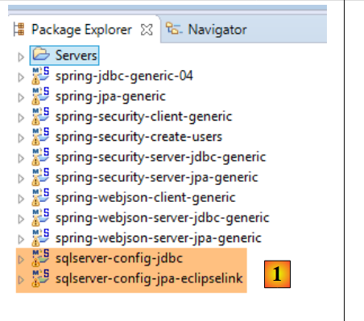 |
- في [1]، يتم تحميل المشاريع التي تهيئ طبقة [JDBC / SQL Server] وطبقة [JPA / EclipseLink / SQL Server]؛
ملاحظة: اضغط على Alt-F5 ثم أعد إنشاء جميع مشاريع Maven.
نفترض أن خادم SGBD SQL قيد التشغيل وأن قاعدة البيانات [dbproduitscategories] قد تم إنشاؤها. علينا أولاً ملء الجداول [USERS, ROLES, USERS_ROLES] في قاعدة البيانات هذه. للقيام بذلك، قم بتنفيذ التكوين المسمى [spring-security-create-users-hibernate-eclipselink]:
 |  |
ويجب أن تقوم هذه التهيئة بملء الجداول الثلاثة بالبيانات:
 |  |
 |
 |
- قم بتشغيل خدمة الويب الآمنة باستخدام التكوين المسمى [spring-security-server-jpa-generic-hibernate-eclipselink][1]؛
- قم بتشغيل الاختبار JUnitTestDao باستخدام التكوين المسمى [spring-security-client-generic-JUnitTestDao][2]. يجب أن ينجح الاختبار [3]؛
 |
 |
20.5.5. البنية [security / web / OpenJpa / Oracle Express]
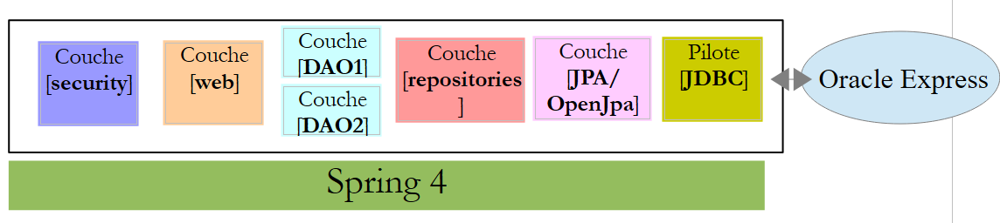 |
 |
- في [1]، يتم تحميل المشاريع التي تهيئ طبقة [JDBC / Oracle Express] وطبقة [JPA / OpenJpa / Oracle Express]؛
ملاحظة: اضغط على Alt-F5 ثم أعد إنشاء جميع مشاريع Maven.
نفترض أن Oracle Express الخاص بـ SGBD قد تم تشغيله وأن قاعدة البيانات [dbproduitscategories] قد تم إنشاؤها. علينا أولاً ملء الجداول [USERS, ROLES, USERS_ROLES] في قاعدة البيانات هذه. للقيام بذلك، قم بتنفيذ التكوين المسمى [spring-security-create-users-openjpa]:
 |  |
ويجب أن تقوم هذه التهيئة بملء الجداول الثلاثة بالبيانات:
 |  |
 |
 |
- قم بتشغيل خدمة الويب الآمنة باستخدام التكوين المسمى [spring-security-server-jpa-generic-openjpa][1-2]؛
- قم بتشغيل الاختبار JUnitTestDao باستخدام التكوين المسمى [spring-security-client-generic-JUnitTestDao][3]. يجب أن ينجح الاختبار [4]؛
 |
 |